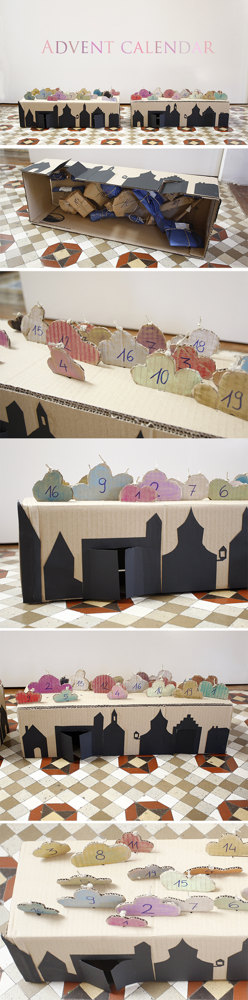

Y por fin! Justo a tiempo para mañana. El Calendario de Adviento para Hannah y Noah hecho! Para "abrir una puerta" se corta el hilo que esta cogido a la nube y el regalo cae hacia abajo. Por las puertas ( izquierda o derecha) pasan con la mano a recoger la sorpresa!